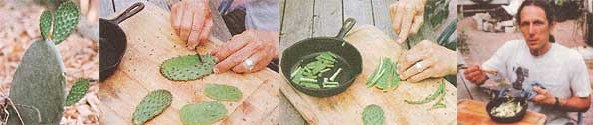

The pads of the glossy, green prickly pear cactus are the best part to eat, but first scrape off the ""stickers"" or glochids, then dice and cook. In this case Christopher whipped up a two-cactus-padomellete.